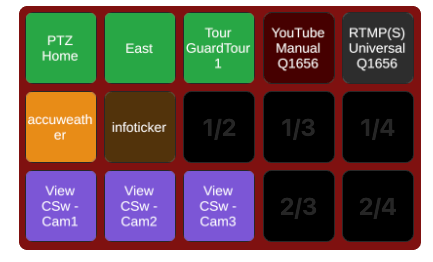
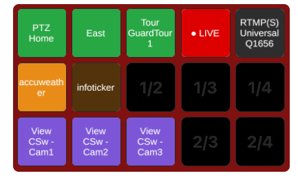
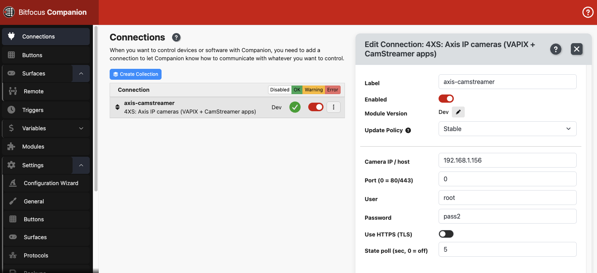
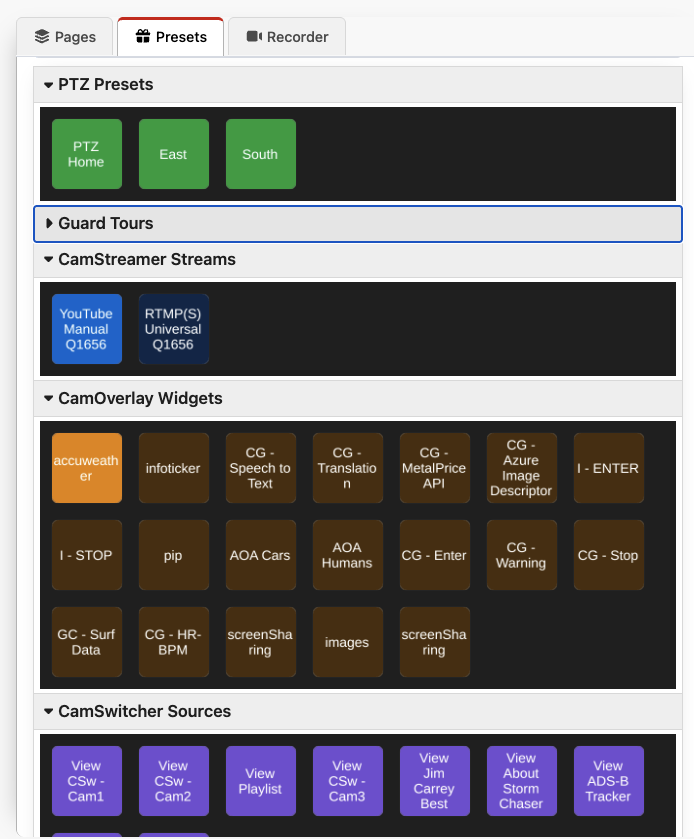
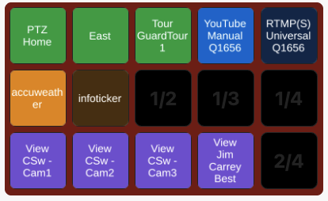
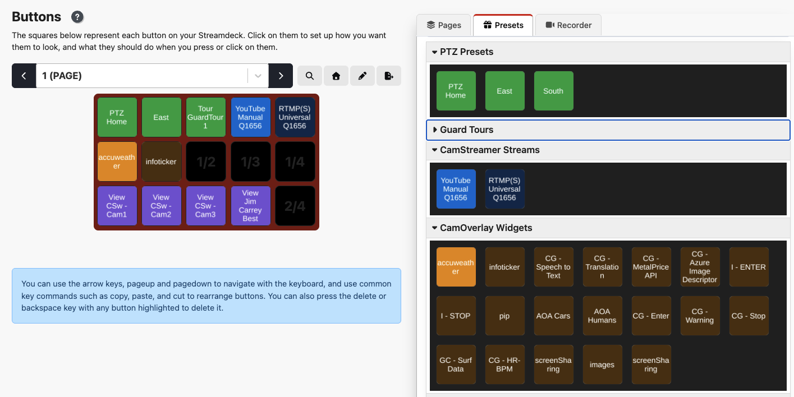
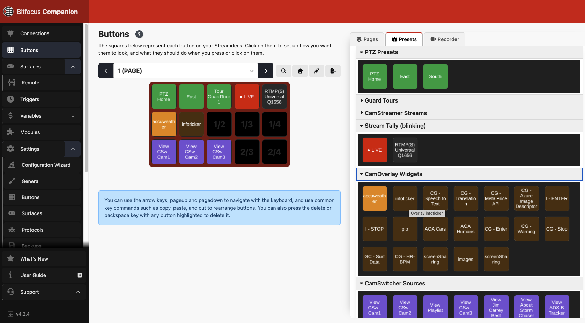
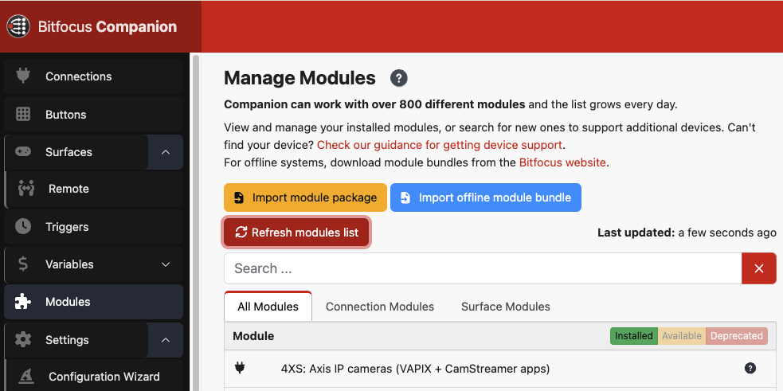

Axis IP Cameras for Bitfocus Companion
A free, open-source Companion module to control Axis cameras and CamStreamer apps directly over your LAN — PTZ presets, guard tours, streams with a blinking tally, overlays and view switching, all with live feedback.


What it does
Five action types, populated automatically from your camera, plus ready-made drag-and-drop presets.
PTZ Presets
Recall server presets and Home, per view-area channel.
Guard Tours
Start, stop or toggle AXIS guard tours, with a running-state feedback.
CamStreamer Streams
Start/stop/toggle streams. Live-state feedback turns the button bright when on air.
Blinking Tally
Broadcast-style red ● LIVE button that flashes while a stream is live.
CamOverlay Widgets
Enable/disable any overlay service — read-modify-write keeps your other overlays intact.
CamSwitcher Sources
Switch the active playlist / view with a single press.
Live Feedback
Buttons reflect the camera's real polled state, even if changed elsewhere.
Digest & Basic Auth
Works on default Axis cameras (digest), entered once on the connection.
Screenshots
From connection setup to a fully laid-out control surface.





Install
No build needed — import the downloaded package straight into Companion.
- Download
axis-camera-control-1.0.0.tgz. - In Companion, open Modules → click Import module package and select the
.tgzfile. - Go to Connections → Add connection, search 4XS or Axis, and add it.
- Enter your Camera IP, User and Password — the status turns green and actions/presets populate.
- Open the Presets tab and drag buttons onto your grid.

Build from source
Node 22 / TypeScript. Runs as an isolated module process.
git clone https://github.com/kotyza/companion-module-axis-camera-control.git
cd companion-module-axis-camera-control
npm install
npm run build # -> dist/main.js
npm run package # -> axis-camera-control-x.y.z.tgzFor live development, set Companion's Developer modules path to the folder containing this module and run npm run dev.